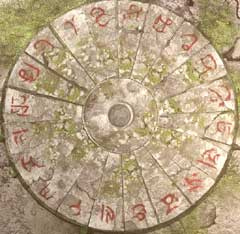

| 概要 | 地図 |
| 淡いヒント集 | ヒント集 | 的確なヒント集 |
| 攻略最短ルート |
| 場所選択に戻る |
シベリア
| 船を出て右へ行き、はしごを登る 人をクリック 「ユコール族のメダル」を入手 ハンスの行った方向へ移動 箱の上にある3つの「石版」を入手 ブルーグラスを調べ、「ブルーグラス」、「石版」を入手  扉のそばのレバーを引く 船へ戻りユーキーに対し「ブルーグラス」を使う 扉へ移動 (扉が開く)  この装置の下にある模様を調べる  ユコール族のメダルを参考に5枚の「石版」をはめる 装置のハンドルを回す 「象牙の鍵」入手 | 次へ >> | |
| 場所選択に戻る |
| 概要 | 地図 |
| 淡いヒント集 | ヒント集 | 的確なヒント集 |
| 攻略最短ルート |
Syberia II
| 目次へ戻る | ページの上部へ |